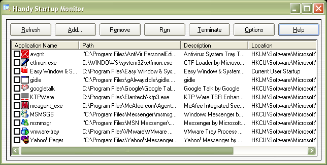

Handy Startup Monitor enables you to manage all the applications running at your computer startup as well as monitor the startup sections for any application add or delete itself from startup .
When Windows starts up, it automatically launches a certain number of applications. Handy Startup Monitor allows you to manage those applications and help you speed up your windows startup. Also Handy Startup Monitor allows you to monitor the registry & the startUp folders and alerts you whenever any application add or remove itself to/from the Startup hence it can protects you from malicious software that may running at the windows startup.

Benefits:
- Manage the startup applications.
- Handy Startup Monitor helps you solve problems with programs that automatically run at startup.
- Handy Startup Monitor useful when loading new software.
- Optimize and improve the system startup time and memory usage.
- Protects you from malicious software that may running at the windows startup.
- Monitor startup sections for any application add or delete itself from startup.
Features:
- Display all the applications running at windows startup .
- Allow to add, edit and delete startup programs .
- Find the startup application's folder .
- Ability to manually run or terminate all of the programs that running at windows startup .
- Well designed and user-friendly interface .
- Alerts you if any new application add or remove itself from the startup .
- Handy Startup Monitor could sort all displayed applications by name or path or Registry section location .
- Small file size and low memory-usage .
- Support for Windows 98/ME/2000/XP/2003/Vista .
- Easy to install and uninstall .
System Requirements
Intel Pentium, Celeron, AMD or compatible processor Windows 98/ME/NT4/2000/XP/2003/Vista